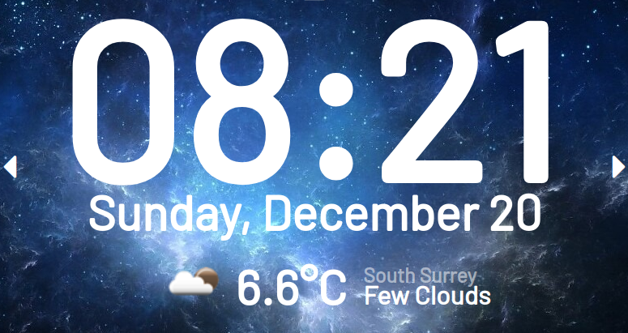
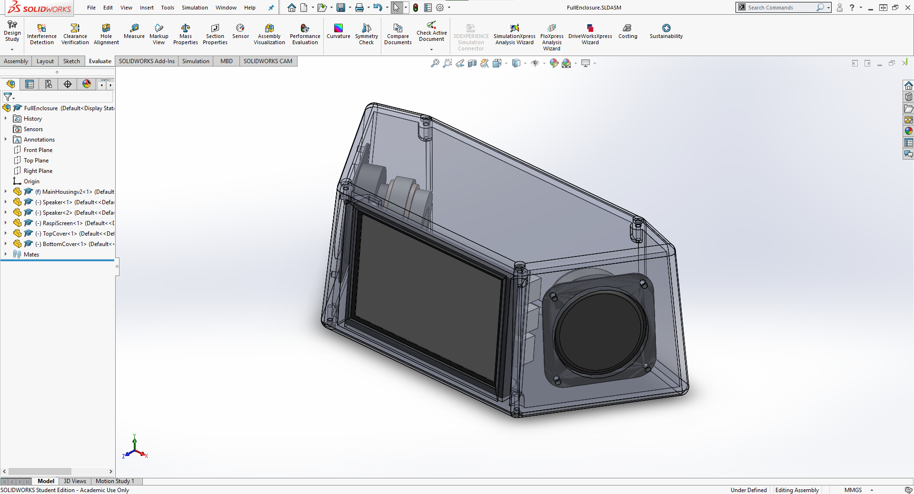
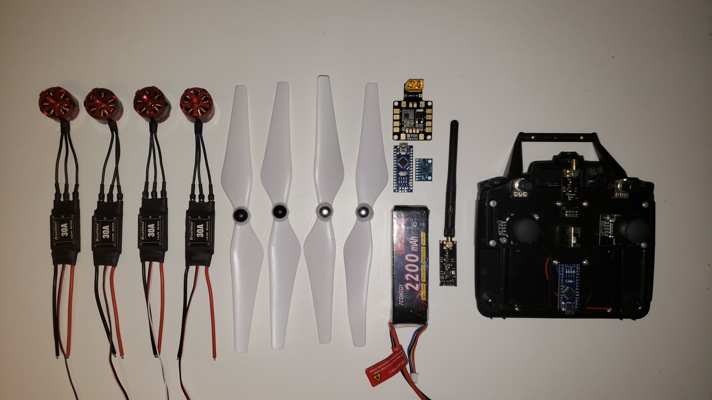
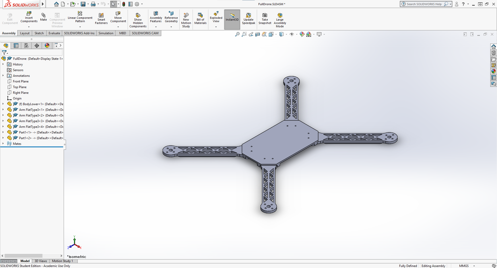
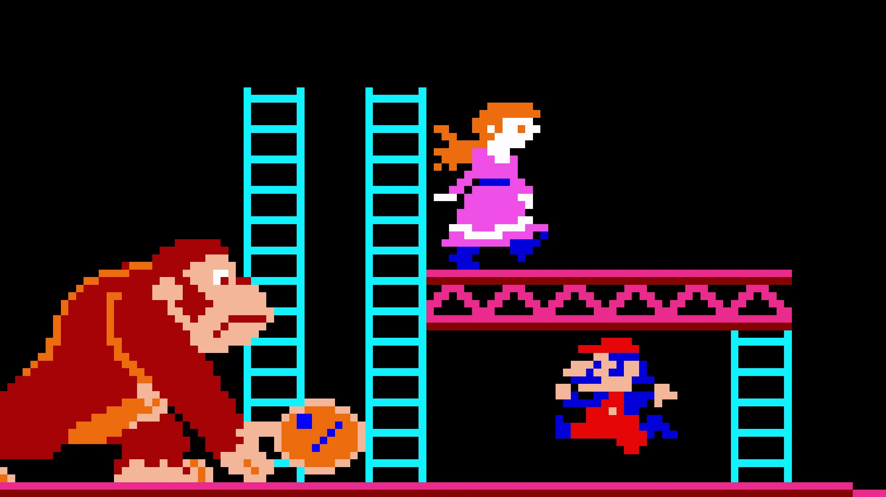

Jarvis Smart Home
Raspberry Pi | Flask | HTML | CSS | JS
Personal Project
December 2020
Arduino Drone
3D-Printing | Arduino | C
Personal Project
September 2020
Puppr
Flask | HTML | CSS | JS | Python | Firebase
TOHacks 2020
May 2020
Donkey Kong Re-creation
Java | HTML | Hardware
Personal Project
April 2019
FIRST Robotics
C++ | Java | Hardware
Senior Lead
2019
Jarvis Smart Home


I designed and developed a Smart Clock using Flask, RaspberryPi and a captive touchscreen. This Smart Clock shows the time, date, weather and other useful information. Using the touchscreen, it can interact with smart home functions, such as turning on and off lights and other features.
To complete my creation, I used SolidWorks to design an enclosure that would hold the Raspberry Pi, speakers, amplifier board, and wiring. I then 3D-printed the enclosure in four large parts and assembled the whole enclosure using M3 screws. I currently use this Jarvis Smart Home as my main bedroom clock and alarm.
Originally, I integrated Google Home API with the addition of SnowBoy for custom wake words, which I set to "Jarvis". However, since doing this the Snowboy library has been deprecated and I have not had time to find an alternative, so the Google Home functionality is temporarily disabled.
I attempted to design both the software and enclosure with expandibility in mind. In the future, I would like to possibly add Spotify API integration and Bluetooth capabilities.
Arduino Drone


I designed, printed, wired and programming an Arduino Drone. The body and arms are created in SolidWorks and 3D-printed on my own printer. The design is modular so that if one arm breaks, I can easily replace the part without having to reprint an entire new body.
I have also constructed a radio transmitting module as well. This transmitter consists of two joysticks and two potentiometers wired into an Arduino Nano, which processes and converts the signals to transmit wirelessly by the NRF module. This entire controller is powered off six AA batteries.
The drone electronics consist of a receiving NRF module that is wired to another Arduino Nano to convert the signals back and then sends those signals to the brain, another Arduino Nano. Yes, this drone consists of three different Arduinos. This main Arduino Nano, the flight controller, processes the signals from the radio receiver and the gyroscopic module to calculate the angle and velocity of the drone. These calculations are then processed and send to the electronic speed controllers to speed up or slow down the motors. The drone is powered off a single 2200mAh rechargable LiPo battery.
In the future, I would like to add a first-person view (FPV) camera to see what the drone is seeing, along with a Go-Pro on top of the drone to capture aerial photos and videos.
Puppr
During TOHacks 2020, myself and two other team members built Puppr, a digital platform to connect lonely, isolated users with local dogs that are available for adoption. These dogs will help with users' mental health as they continue quarintine and reimmerse themselves back into a social world. The entire website was built in 48 hours from scratch.

Puppr's front end was written in HTML, CSS and Javascript while the backend was written in Python and Firebase. The landing and signup page are both purely HTML and CSS, while the selection page's functionality is Javascript. When selecting the dogs, you are seeing real dogs available from a real shelter. Using Flask to build a web-scraping API, we were able to import that information into our page for the user to easily see. Whether you select the checkmark or not, you will cycle through a variety of dogs (however many are available at the time). If you choose to click the checkmark, the dog's profile will be saved in the left sidebar, where you can click on that saved dog to go the shelter's webpage. Since this entire app was built within a 48 hour time frame, our web-scraping is accurate, but a little slow; if we were to redo this project, that would be one of our key redesigns for Puppr.
Donkey Kong Recreation

I decided to recreate the classic 1980s Donkey Kong Arcade game. I was able to completely adapt and re-create the first level in it's entirety. The game included accurate gameplay and exact sprite animations, with the sprites taken from the original spritesheet. Viewing the final product compared to the original, I had almost made an exact replica of the orignal arcade game.
To code the game, I used a combination of Java and HTML along with JGEngine to render the environment. A challenging hurdle to overcome was matching the bounding boxes to the spritesheet and create seamless animations, but it turned out quite smooth in the end. I had started with basic keyboard controls, but eventually integrated gyroscopic movement controller. This controller was an alternate way to play the game and added a level of difficulty, both in the programming acclerometer values and completing the level.
FIRST Robotics

I was Co-Captain of the FIRST Robotics Team that competed at the FIRST Western National Competiton. I lead the team through design, fabrication, and testing throughout the robot's construction. The FIRST team was only in it's second year and there were various hiccups along the journey to the Western National Competition. Many of the members did not have any knowledge of fabrication, electronics or programming, so myself and the other captain took it upon ourselves to educate the team as much as we could.
I taught the students how to think about the many factors and variables that we needed to consider when designing such a robot, but keep the solutions realistic and manageable for the size of our team. We also had to consider the easiest and most efficient way to manufacture said robot within the 6 week timeframe provided. At the end of 6 intense weeks of designing and building, the team arrived at a relatively well designed robot given the materials and time.